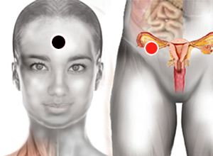

Dismenorrea
Par
hipófisis - ovario (hígado)

Generalidades:
Menstruación difícil y dolorosa.
Los síntomas pueden ser diversos: calambre en las piernas, dolor pélvico o abdominal intenso, dolor en la parte baja de las espalda (a la altura de los riñones), dolor de cabeza, náuseas, mareos, vómitos,exceso en sudar, desmayos, fatiga, así como ansiedad, irritabilidad o depresión, es decir, que afecta tanto el estado físico como anímico. En algunos casos, además de los síntomas, se expulsan durante la regla coágulos de sangre o moldes endometriales. Suele distinguirse entre dismenorrea primaria, presente en mujeres jóvenes, y dismenorrea secundaria, que aparece en mujeres mayores.
En las mujeres jóvenes la dismenorrea aparece entre los 6 y los 12 meses siguientes a la menarquia (primera regla) y no suele deberse a ninguna enfermedad conocida, sino a los efectos de un eicosanoide llamado prostaglandina